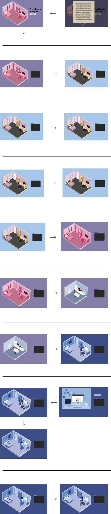

The Life of a Designer
Life of a Designer
2. Columns 1-4
Column A - The what
(3) Something between a game and a web art piece
Column B - Subject/Theme Starting Point
“Amuse oneself by engaging in imaginative pretence.” (Oxford Lexico 1.2)
- We drew inspiration from this definition as it helped us decide in the roleplaying perspective of our website. This combination of storytelling through roleplaying allows us to design a website which somewhat resembles a game, but still attains the integrity of webart by focusing on a message we want to convey
“Be cooperative.” (cooperate with what you have b/c you have no choice) (Oxford Lexico 3)
- This definition can help with our idea in depicting a scenario where the user must follow a rigid path and cooperate with their circumstances. Designers fall into this category as they have a lot of work thrown their way and must cooperate with all types of client-based and work-based pressure constantly.
Our own theme/approach from this inspiration:
- A character is role-playing in the game
- They are engaging in amusing activities/engaging in diversion
- User is controlling the character’s interactions (JS)
Column C - Informing Theory/Logistics
Anna Anthropy
- Actions of characters build personality
- If the correct ending not found (if there even is an ending), returns player to beginning page
Sicart
- What’s required for play to exist?
- Rules. Rules are the instrument which allow creation and shared identification of a context of play. All contexts of play have rules of some kind.
- Ties in with Anna’s statement
Column D - Page-Oriented OR JavaScript-Oriented option
Page Oriented Option (group of 2)
- At least 8 html files PLUS index & statement pages = 10 pages total
- At least 4 pages that use JS in some way
- Thoughtfully integrates JavaScript from at least 2 categories out of the List of JavaScript Categories for A2
3. Artist Statement
Our site “Life of a Designer,” starts off with the student sleeping in bed. Next, their alarm rings and when turned off, they attend their morning zoom class. After a few hours of class, the student breaks down due to a bad critique received during class. They decide to cool down by taking a nap prior to going about their day. Once they’re awake, they scroll through their phone for a few hours without leaving bed, highlighting the common behaviour of procrastination among students, especially when there’s a lot of work to be done. Once they finally get out of bed, they head to the kitchen to make some dinner. The student makes a cup of coffee to fuel up for the long night of work ahead, and also warms up a bowl of ramen, a common and affordable substitute for a “meal” that students often eat during their time in school. Once the student has eaten dinner and drank their coffee, they head back to their room to begin their work. The user is able to get a closer view at the student’s screen and the process of looping between the same few sites to complete the task, a common behaviour among design work. Moments later, the student breaks down in bed again, due to stress and overwhelmness of the work. Once they’ve calmed down again, they return back to their work and finally complete by the early morning. They take a long stretch to end off a night of hard work and head to bed. The user then loops back to the first screen, where they find the student sleeping, and the entire day restarts.
For our A2, we have decided to take on the approach of a website that is somewhat between resembling a game and a web art piece (option 3). We want to focus on storytelling through the roleplay of a student graphic designer and their day to day lives, as it reflects the activities and struggles that we both go through as student designers in our everyday lives. The story goes through the ups and downs of attending design classes during a pandemic and addresses the amounts of stress, mental health issues and stereotypical unhealthy lifestyle many students go through in a comedic way. The main takeaway from this would be to highlight the never ending loop of work, play and procrastination we go through via a ‘game’ with no ending.
4. Javascript Requirements
Files using JS: All 13 pages
Files with JS Categories: pageTwo.html (3 mouse-events in rollover), pageNine.html (random images)
5. Sitemap 
6. Sources
https://www.w3schools.com/howto/howto_js_typewriter.asp
https://www.w3schools.com/cssref/pr_pos_overflow.asp
7. Creative Commons Credits
URL:
https://soundcloud.com/krist-f-horthy/midnightlo-fi-hip-hop-beatfree-creative-commons-license-free-download
Site: SoundCloud
Vocals: Garden by HEKTOR THILLET (coffeeeurope) (c) copyright 2018 Licensed under a Creative Commons Attribution Noncommercial (3.0) license.
dig.ccmixter.org/files/coffeeeurope/58532